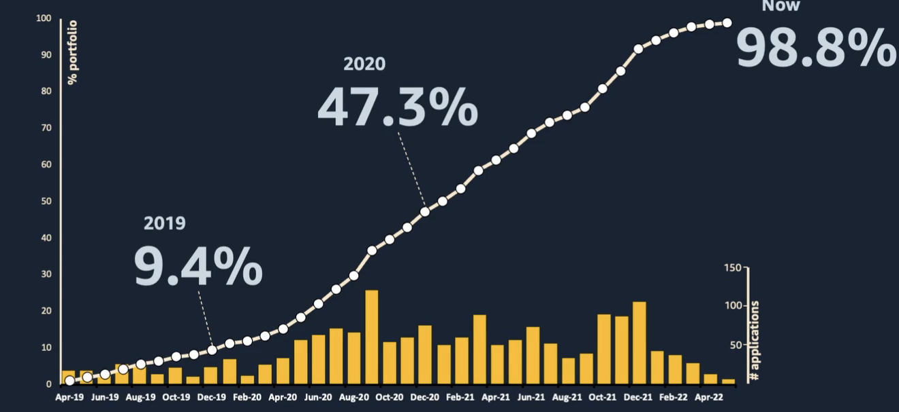
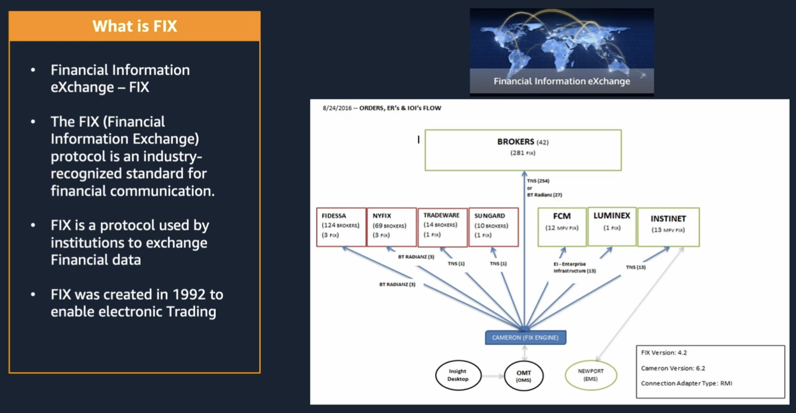

AWS - Financial Services Cloud Symposium - 2022
Contents
AWS - Financial Services Cloud Symposium - 2022¶
How Nomura built a next-generation time series Metrics-as-a-Service¶
Andy Coates - Executive Director, Global Head of Infrastructure Development, Nomura
Arnav Khare - Principal Solutions Architect, Global Financial Services, AWS
Serverless analytics on AWS¶
pillars for AWS analytics
scalable data lakes
explosion of data cannot be copped up using traditional analytical tools
AWS provides scalability S3 and Athena
purpose bilt for performance and cost
reduces overhead
serverless and easy to use
build use cases rather than managing servers
unified data access, security and governance
difference between data swamp and data lake
ability of fine-grained access
built in machine learning
Sagemaker, RedShift ML and others are directly integrated into data lakes
AWS Serverless options for data analytics¶
AWS Glue
serverless ETL engine
allows users to bring code and run in fully managed AWS clusters
feature of crawler
scans data on S3 and populates data catalog
data catalog is integrated with Amazon Athena
Amazon Athena
serverless SQL engine which can scale to massive volumes of data
Amazon Kinesis and Amazon MSK(Managed Services for Kafka)
streaming services
\(\tiny{\text{AWS Symposium 2022 - Nomura}}\)
Serverless analytics pipeline using Glue and Athena¶
use Glue to connect to on-prem datasources and query using JDBC/ODBC
inject files using Glue and transfer using AWS DataSync
once data comes in S3 buckets, Glue can be used to cleanse, enrich and transform the data
then can be consumed in downstream ML or other applications
\(\tiny{\text{AWS Symposium 2022 - Nomura}}\)
Vision for infrastructure platform at Nomura¶
Introduction to Nomura¶
In 2010, Vision for the platform¶
measuring/checks but threw the data away
identify hot-spots in the infrastructure and assist with root-cause analysis
forward looking capacity planning
Journey and lessons learned¶
Overview of platform design¶
Data collection
gather data globally from all systems
metrics baseline
ETL
standard format
Processing and Analysis
statistical analysis
Storage
Query and Visualization
Evolving with infrastructure estate¶
In 2010
focussed on the KPIs of servers only (CPU, memory usage, cores of CPU, network and disk/IO statistics)
about 8 billion data points every day
In 2015
focused on both servers and desktop states
In 2022
\(\tiny{\text{AWS Symposium 2022 - Nomura}}\)
Phase 1 - Initial launch of the platform - 2010¶
load of Java batch job for ETL and processing
SQL to query it, Spring MVC application
KPIs were presented in charts and unified manner, which was very helpful in times of failures especially
added value, so started making predictions
\(\tiny{\text{AWS Symposium 2022 - Nomura}}\)
Phase 2 - Evolving to big data - 2015¶
batch processes were vertically scaling
number of regional jobs were taking more than 8 products
open up the metric platform, open for everyone “as-a-service”
realized opening up database resulted in poor architecture/practices around
moved into Hadoop
moved processing into Scala running in Spark
moved from mySQL to time-series OpenTSDB and querying using REST protocol
x22 times improvement
\(\tiny{\text{AWS Symposium 2022 - Nomura}}\)
opened metric platform as “metric-as-a-service”
\(\tiny{\text{AWS Symposium 2022 - Nomura}}\)
Current architecture on AWS¶
Goals for cloud transformation¶
Hadoop ecosystem were cumbersome to manage
move towards serverless architecture
scaling servers meant to buy and maintain servers
disc failures would lead to backlog of data in the pipelines
opening up as metric-as-a-service made multi-tenancy at storage layer where everything was going through one pipeline
there was a need to break this out
Transforming to public cloud - 2022¶
changes were at the 3 middle layers
moved ETL to Lambda/Python
moved processing/analytics into AWS Glue
moved storage into AWS S3 and Athena
\(\tiny{\text{AWS Symposium 2022 - Nomura}}\)
High level logical architecture¶
\(\tiny{\text{AWS Symposium 2022 - Nomura}}\)
Detailed logical pipeline view¶
In the ETL pipeline
the first lambda processes bundles of files from data producers
this is processed and put onto queue
the second lambda unbundles these files and processes them into chunks of JSONs
JSONs are then put onto another queue
the third lambda aggregates them into Parquet files
this triggers the Glue jobs which scales the number of workers based on how much data needs to be processed
aggegation is done at minute, hour and day level of aggregation – this dataset is queried using Athena
Athena is not exposed directly but is done using lambda and loadbalancer in front
infrastructure and application level of data is processed using different pipelines
\(\tiny{\text{AWS Symposium 2022 - Nomura}}\)
Thinking differently in cloud¶
started the journey while migrating to Hadoop
decomposing the architecture
moving to AWS brought in serverless capability
kept control of how people will query the system
observability and monitoring how people are querying/behaving is important
keep control of it
Future plans¶
data collection has not changed
modernization of data collection is next in plan
on-premise infrastructure are leveraging AWS services
unify the tools of on-premise and cloud data infrastructures management
along with metrics, logs and traces are planned to manage centrally
apply machine learning tools to apply on data stored on S3
Q&A¶
Why are there 3 lambdas in ETL
looked at Kinesis as alternative and other ways of combining this
this seemed to be the best for us
can also be done through step function
step function works well when there is a complex chain of processes and decision chain of processes
this was a case of linear
What is the data volume, how are the metrics pulled in, what type of metrics
35 billion data point on infrastructure side
400,000 datapoint per second
2TB of files that arrive in the pipeline
this translates to 4TB of JSONs
this translates to 40G of parquet files
the data is pulled using different mechanism
infrastructure data is pulled in,
stored in regional hubs as part of monitoring system responsibility
this is then fetched in periodically
these buckets of data are then fetched in
for non-infrastructure, endpoints are provided
people push in data
is it custom metrics, cost controls as these things can blow-out
on-premise service and desktop metrics
virtualization and group information
cost control - indirectly
request each consumer can make
no usage of select * allowed
based on query pattern
change what will be allowed and not
how many dimensions do you have for a metric, does the service scale
limits on number of dimension
dont store raw data, only store min, max or other aggregated result
all have different retention period based on aggregation
max of 10 per entity
what is SQS used for
SQS is used before using the Glue job
used to allow the flow control
How three Fintechs are transforming Financial Services with AWS¶
Moderated by Kathryn Van Nuys, Global Head, Fintech Business Development, Startups and Venture Capital, AWS
customer needs/experience
how are you solving customer needs
Chris Ciompi, Head of Marketing, Clarity AI
sustainability tech platform
integrates into large other platform like BlackRock - Aladin
Adam Healy, CSO, Blockfi
block chain engineering look
4 yr startup in NJ
help retail branded, deposit crypto and generate yield on it
also have institutional services on prime services OTC trading products
Ali Heron, CTO, Petal
in core is credit card company
cash flow underwriting, provide access to credit to ones with subprime or no credit history
PrismData - sister company - allows cash flow data and makes it available to businesses to expand their market
these company use data or cloud based technology to solve customer needs
Chris/Clarity AI¶
first
what you are investing in is actually sustainable
how to decide when quiting one client and join another
is it sustainable
being in the workflow
second
if investment is sustainable or not needs to be reported to regulator, is it sustainable or not
facilitates easy compliance reporting
Adma/Blockfi¶
how to provide retail/institutional clients better access to crypto clients in a packaged manner
hedge fund or family office
there is need of emerging
lot of demand on millenials
servicing them
institutional
provide capablity in terms of API
Ali/Petal¶
founded 7 yrs ago by an immigrant
couldn’t get Credit card
to get credit you need to have credit - broken system
idea of cash flow underwriting
take banking history and turn them into score
150 million who dont have access to credit
FICO is not available
PRISM collects this information and makes them accessible
How do you solve the problems using AWS Cloud¶
How do you solve historically underserved market/Petal¶
first - teach folks how to responsively take care of credit/lack of financial education
second - models which data scientist work using RedShift, Postgre, SageMaker, Python notebooks ingesting data from bank transaction and other sources to predict clients with good credit score
BlockFi¶
100% users of AWS services using EC2, SageMaker, Lambda,
started ML/DS to understand operational needs, forecast and security needs
forecast how to prestage crypto asset
crypto asset are controlled by private key
need to sign transaction to move assets
control of private key is important
how to prestage assets so that we are not overrisking in a way to a safe wallet
this can be modelled into risk and security scores while not overrisking assets
with AWS it is more about finding ways to scale together
1.6 million retail clients in 50 countries
1000 employees in 20 countries
AWS is scale both customer side of business and internal capability providing access to sensitive services safely
Clarity AI/ESG/Sustainability and challenges¶
scaling
customization capability at user level
experience of a user
each portfolio is managed differently as per the user needs in respect to social, business and government needs/perspectives
Different regulatory requirements, how to approach¶
BlockFi/Petal¶
financial services company and not security company
needs to be aligned with regulatory
both a breach and regulatory can shut you down
standard playbook with AWS by its side and regulators/partners are aware of it
Clarity AI¶
monitor controversies company level at worldwide
use NLP to read 100K news sources, to calibrate high/low/medium level of risk
use ML to estimate data and do reliablity checks
collect 49K companies for all sustainability risk
Unlock innovations¶
Petal¶
people with sub-prime score have better financial future
how to do that
people(who can understand what is needed), processes, technology
open banking
BlockFi¶
BlackChain tech, Protocol tech
DeFi - rapidly emerging space
custody crypto trying to understand how to work through disaster recovery,
retailer trying to understand how does the insider threat works,
there are things that are beyond regulators
How the Options Clearing Corporation modernized its clearing technology with Ness¶
Paul Meulbroek - Head of Cloud and Data, Ness Digital Engineering
Amy McCormick - Chief Information Officer, OCC
Dave Hoag - Managing Director, Market Risk and Default Management, OCC
OCC clears millions of transactions each day across options, futures, stock loan products
preserve integrity of each contract
Ness¶
help companies go through cloud transformations, rearchitecting, refactoring, adapting modern data practices and handons in transformation
replacing clearing and risk management technology
Motivations of transformation¶
modernizing technology, getting modular that makes system flexible and reliable and scalability
tremendous growth happening - data should be available to analyst to get insight about the patterns
giving transparency and insight to internal analysts and clients
antipication/prediction about margins/capital requirements where it is leading and get prepared for that
resiliency to manage 17 different future and options market
reevaluate skills, processes in place with Agile practices and eventually engineer such platform with cloud based technology
How Hyland helped Finra to securely manage their most critical applications¶
Steve Comer, AVP - Financial Services and Insurance, Hyland
Mike Bonomo, Senior Account Executive
Hyland¶
FINRA is a customer
leader in content services landscape
FINRA¶
Financial Industry Regulatory Authority
deter, detect and discipline transactions in financial space
in order to do that, they need data, content and transparency
The Problems¶
Scalability and Legacy Applications
information were missed
Why Alfresco¶
Documentum - frustrated
Alfresco/Hyland - open source and open API company - DNA of company
cloud first, cloud friendly and cloud native
case management solution use for fraud tracking detection use cases

\(\tiny{\text{AWS Symposium 2022 - FINRA - Alfresco Process Services}}\)
FINRA’s next steps and future state¶
adopt AWS open search
Building climate resiliency and sustainability into your IT infrastructure¶
Elias Ghanem, Global Head of Capgemini Research Institute for Financial Services, Capgemini
Ravi Khokhar, Executive Vice President & Head of Cloud at Capgemini Financial Services, Capgemini
The Goldman Sachs Cloud Fast Track: Secure Cloud Deployments at Scale¶
Ryan McDonough, Vice President, Cloud Enablement, Goldman Sachs
Shubham Shukla, Vice President, Cloud Enablement, Goldman Sachs
Santander’s journey to achieving security at-scale on AWS¶
Jorge Álvarez Fernández, Global Head of Public Cloud Architecture, Santander
Luis Enríquez, Group VP, CTO for Cloud, Infrastructure & Automation, Santander
How USAA built a paved road with guardrails¶
Gerum Haile, VP, Chief Architect and Technical Fellow, USAA
Shift record retention from obligation to advantage with AWS¶
Russell Lewis, Financial Services Compliance Specialist, AWS
Alket Memushaj, Principal Solutions Architect, Capital Markets, AWS
Transform cross-border payments compliance with AWS¶
Gloria Vargas, Account Manager, Global Financial Services, AWS
How Fidelity asset management’s equity trading platform migrated all-in to AWS¶
John Kerin, Head of Engineering, Asset Management - Equity Technology, Fidelity
Girish Maraliga, SVP, Head of Architecture & Platforms, Fidelity
Fidelity Asset Management¶
migration of equity trading business into cloud
\(\tiny{\text{AWS Symposium 2022 - Fidelity Asset Management}}\)
Asset Management - Where are we now¶
\(\tiny{\text{AWS Symposium 2022 - Fidelity Asset Management - Where are we now}}\)
Asset Management - Migration Progress¶

\(\tiny{\text{AWS Symposium 2022 - Fidelity Asset Management - Migration Progress}}\)
Equity Trading Business Context¶

\(\tiny{\text{AWS Symposium 2022 - Fidelity Equity Trading Business Context}}\)
Equity Trading Footprint¶
\(\tiny{\text{AWS Symposium 2022 - Fidelity Equity Trading Footprint}}\)
Equity Trading Cloud Architecture¶
on traders desktop, there are series of applications that commands down to the trading system
overall command-query pattern is used overall
based on orders and instructions received, traders initiate commands using public API
large footprint of services
roughly 70 REST based services that work with event based system like Kafka
few standalone Java applicatitons that run vendor applications
the order management system is the entry point to EKS
uses in-memory database that keeps up with high-volume of transactions in the trading system
Oracle was not working through
the event messaging system that is used now is Kafka
earlier TIBCO was used, which is migrated to Kafka

\(\tiny{\text{AWS Symposium 2022 - Fidelity Equity Trading Cloud Architecture}}\)
Equity Trading - FIX protocol¶
protocol to communicate with external broker-dealer
variety of different vendor market dealers are engaged
instead of as earlier managing peer-to-peer connectivity with broker, now brokers are asked to meet at the cloud

\(\tiny{\text{AWS Symposium 2022 - Fidelity Equity Trading - FIX Protocol}}\)
\(\tiny{\text{AWS Symposium 2022 - Fidelity Equity Trading - Networking use case of FIX Protocol}}\)
Equity Trading - Resiliency use case: Kafka¶
use case 1
run using a hot-warm pattern because there are SLAs that are hard to achieve which is to get real time messages that needs to reach traders
trying to figure out an optimal replication pattern to replicate from one region to other
best option for us right now is hot-warm pattern
Dec 7th AWS failure
lessons learnt - fail-over often
resilency of trading system
\(\tiny{\text{AWS Symposium 2022 - Fidelity Equity Trading - Resiliency use case: Kafka}}\)
Equity Trading - Scaling with automation use case¶
equity trading has around 250 applications
unique tech stack
rather than copying over cloud formation templates, they leverage CDK heavily
true CDK is constructs, building true OOP
a library of construct that supported Java/event-based standalone construct and RESTful construct
at scale, this allowed them to build CI/CD workflow that then uses CDK synthesizer generate the cloud formation template, which then offers reusability across different applications
this presents an example that infrastructure done right can offer scale application at another level

\(\tiny{\text{AWS Symposium 2022 - Fidelity Equity Trading - Scaling with automation use case}}\)
Reflections on cloud migration journey - success factors¶
equity trading was one product out of 80 products that fidelity has across 20 diff product-line
understand what the portfolio of applications looks like
how to codify migration into patterns and pipelines
estabilishing the patterns allowed achieve the scale
it was the existing team who made this possible, fixed timeframe for each app to go to cloud, clear entry-exit criteria
product team owned this effort
migration happens with feature development
How Fannie Mae is modernizing its technology, people, and processes with AWS¶
Arif Sattar, Senior Director, Enterprise Cloud Migration, Fannie Mae
Fannie Mae does not originate loans but purchase loans from vendors
after purchasing, convert them into MBS which then is bought by investors and institutions to provide liquidity
home ownership (as of Jun 2022) is about 65%, i.e., by owners
provided $1.4T liquidity in 2021

\(\tiny{\text{AWS Symposium 2022 - Fannie Mae - Digital Transformation}}\)
cloud strategy interweaving along with digital transformation
Mastercard’s journey from on premises to an ML-enables SaaS solution for fraud detection¶
Manu Thapar, CTO, Mastercard, AI, Security and Fraud Products
How business transformation is driving mainframe modernization in Financial Services¶
Steve Steuart, Global Head of Mainframe Migration and Modernization, AWS
Unlock business value with document processing ML pipelines¶
Mojgan Ahmadi, Principal Solutions Architect - Financial Services, AWS
David Kheyman, Senior Solutions Architect - Financial Services, AWS
Truist digital straddle: A customer-first approach to merger integration¶
Ken Meyer, EVP & CIO, Experience and Innovation, Truist
How Prudential’s data platform drives inclusive innovation at scale¶
Shihas Vamanjoor, Vice President, Enterprise Data Platforms, Prudential
Prasanna Sridharan, Senior Data & Analytics Architect, AWS
How Liberty Mutual empowers developers to drive Innovation¶
Matt Coulter, Senior Architect, Liberty Mutual
How The Clearing House creates frictionless experiences for their bank customers¶
Elena Whisler, VP, Relationship Management and Sales, The Clearing House
Leveraging AWS AI/ML to support the customer experience for financial institutions¶
Alvin Huang, Business Development, AWS
How Global Payments accelerates innovation on AWS¶
Scott Carter, CTO, Global Payments
Raghu Ram Bongula, SVP Engineering, Global Payments
How JPMC modernized its hedging and risk management platform¶
Paul Bauerschmidt, Managing Director, JPMorgan Chase
How Vanguard sped up its internal approval process for using AWS services¶
Michael Bakay, IT Project Manager, Vanguard Cloud Platforms, Vanguard
Rebecca Sundheim, Head of Developer Experience, Vanguard Cloud Enablement, Vanguard
How Munich Re built an insurance-focused IoT solution on AWS¶
Lewis Wight, CTO, Meshify HSB (Munich Re Group)